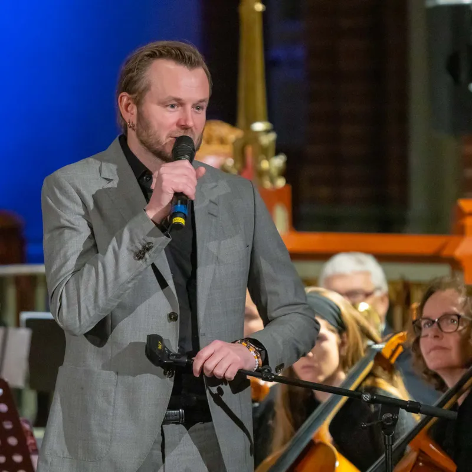

Knut Anders Sørum
Knut Anders Sørum er kjent for sin vakre stemme, fine personlighet og sine sterke og litt underfundige låter. Han står fram som en av Norges beste vokalister. Og ganske enestående, han har funnet opp sin helt egen sjanger, Soul på Totendialekt!
Den erfarne musikeren og låtskriveren har en lang karriere bak seg, via flere rockeband, som Norges deltaker i Eurovision Song Contest i 2004 og som vokalist i «Skal vi danse» på TV2.
Det var imidlertid som vinner av NRKs «Stjernekamp» i 2016, med Puccinis «Nessun Dorma», at folk for alvor fikk opp øynene for Sørums stemmeprakt.
Knut Anders Sørums musikk kan oppsummeres slik en anmelder skrev; «Det er som om Prøysen møter John Legend». Det er rett, begge er viktige inspirasjonskilder som kan finnes igjen om man tar seg tid til gjennomlytting av hans mange fine album.
I 2010 gav han ut den kritikerroste plata «Prøysen». VG skrev «den har blitt en dempet og ettertenksom plate der hovedpersonen aldri faller for fristelsen til å dominere over sangskatten han har bearbeidet».
På albumet «Ting flyt» fra 2013 kombinerte han den amerikanske soul-sjangeren med tekster på totendialekt. I 2016 kom plata «Audiens 1:1», som var et resultat av et samarbeid med Kjetil Bjerkestrand, Erik Hillestad og Kirkelig Kulturverksted. I 2017 kom et livealbum fra turneen samme år, og to år etter kom «Dom vonde orda».
I 2021 gav han ut et etterlengtet julealbum med overvekt av nye julesanger, skapt av artisten selv.
Konsertene kan bestå av Knut Anders alene ved pianoet. Det blir en vakker, intim og lavmælt opplevelse. Han kan også ha med seg erfarne og dyktige musikere i trio-format, eller komme med fullt band og fullt trøkk.
Uansett format svinger det godt. Publikum blir alltid invitert til en eksklusiv og god lytteropplevelse de vil gjemme i minnet.